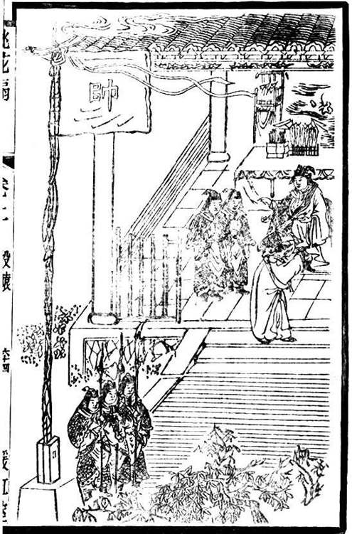
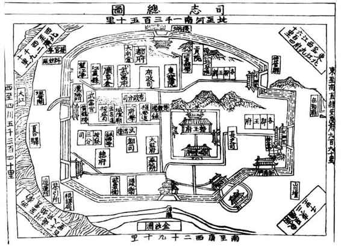
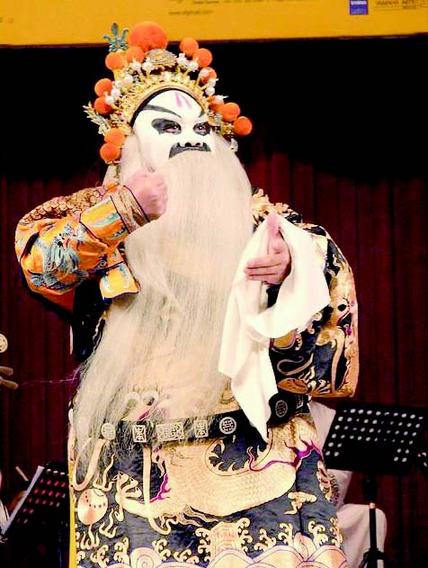
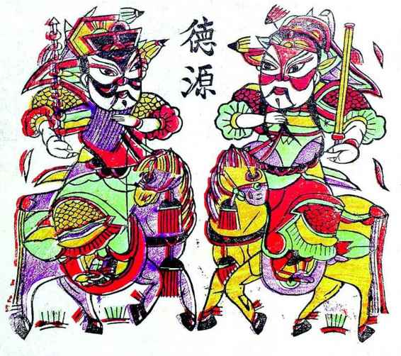
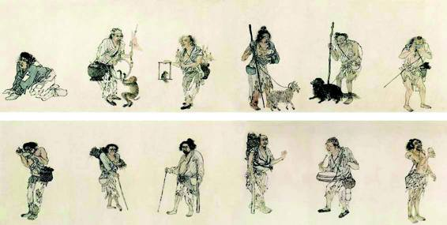

简单地指出左良玉既为官军、又是土匪，并非目的。假如到头来本文所论仅关乎左氏及左军品质如何，在我而言，是没有意义的。我写左良玉，兴趣其实不来自他本人。他值得我们讲述与认识之处，是藏在他背后的某些东西。基本上，这可以浓缩成两个问题：为什么会有左良玉？这类现象是怎么形成的？因此，以下我们不谈左良玉，谈他的原因和由来。有远有近，而从近处讲起。
左军军纪败坏虽有传统，但客观地看，是逐步加重的。山西时期似乎还没有记录，河南时期的早期，开始出现，但既不多也不特别突出。问题变得严重，以至常态化，与三点相随。一是军力越来越强，二是部队成分大变，三是兵饷缺口加大。军力愈强，骄兵悍将之心益无忌惮，而勇于为恶，这是心理上总的趋势。相比之下，后二点产生的问题更加实际。“朱仙镇之战，左精锐已尽，其后归者多乌合，厮役扈养之人居大半”[47]。为不隳实力，左良玉每战必招降纳叛，泥沙俱下，久之，实际左良玉已不能制，“亲军爱将大半死，而降人不奉约束，良玉亦渐衰多病”[48]，军中暴行令人发指：
左将画楚疆为各镇，自惠登相（即从前江湖上称“满天星”者）驻汉阳外，诸将咸有分地，楚人多苦之。王之纲者，在武昌县尤残忍，好以人为粮，裸而悬于柢，灌沸汤以荡尽其肠腑，而后烹之。之纲别号扛子，百姓闻其名，皆夺魂魄。楚绅士之不能去者，出子女财帛，所以奉镇将者百端，冀得免。[49]

《桃花扇》•投辕
崇祯十六年正月，左良玉名曰就食、实避李自成，舳舻蔽江，“声言诸将寄帑南京”，南京大恐，“士民一夕数徙，商旅不行。”遂由侯朝宗以其父名义，致书左良玉阻之。《桃花扇》本折演柳敬亭携侯朝宗书信，赴行辕面见左良玉。堂上坐者，即左良玉。

明代武昌军政总图
图中详细标识了武昌各官署分布， 顶端注明“ 北至河南一千三百五十里”，这是左良玉躲避农民军一路溃逃的来路，也是沿途掳掠的过程。
文中“在武昌县尤残忍”记为王之纲，应误。王之纲是高杰的部下，“十三总兵”之一。不过，人名虽然搞错，事情应非妄传。无度扩张，除导致左军成分复杂、乌合之众，另一可怕危机就是兵饷奇匮。前引《明季北略》称其有兵二十万，而仅二万五千人在额有饷；《宁南侯传》则说“兵以三十万称盛，然止四万在额受粮”，总之缺口都在九成左右，换言之，绝大多数士兵粮饷都要自行解决，不事抢掠何以致之？开封之围，侯恂受命督师前奏对，所谈中心问题就是粮饷：
诚使臣得驰赴其军，宣谕将士，鼓以忠义，用三楚之粮，养全镇之兵，臣不就度支关饷，陛下亦不必下军令状责取战期，机有可乘。[50]
要求将湖北全境之粮供其支配，以养左军。这个要求显然没有答应，于是左军自行剽抢；对楚地百姓来说，结果总之一样。《桃花扇》写柳敬亭替侯方域到武昌下书，被两个军士拿住，说他们“饿的东倒西歪”，设若武昌时期左兵果达八十万众，此距事实应该不远，当时情况正像二卒所念民谣：“贼凶少弃囊，民逃剩空房，官穷不开仓，千兵无一粮。”[51]嗷嗷待哺八十万兵卒，置之此境，岂非洪水猛兽？
切近地看，左军“杀掠甚于流贼”，似乎有特殊原因造成，甚至有其“不得已”。如将这些原因消除，危机就应该能够解决。侯恂当时奏对崇祯皇帝，似乎就是这个意思。他把左军纪律之坏归之“督抚驾驭乖方，兼之兵多食寡”[52]两点，言下之意，倘如督抚得人、兵得其食，问题即可消失。但果真如此么？
某些具体、特定原因，不无考虑价
值，但我们不能为之所蔽。因为，假如眼睛不是死盯着一人一事、一时一地，很容易发现更广阔的事实。从明末当时实际看，即便并无左良玉所部那种问题（招降纳叛过度导致部队成分复杂、兵饷缺口巨大），“兵匪一家”情形也照样发生。崇祯末年起，官军罗九武部多年为害桐城、安庆一带，“入人家劫掠”，“十百为群，横县中”，“贼乱于外，兵乱于内，一县中如困汤火”，罗九武“自谓城守功高，桐之子女玉帛相随入两营者，不可胜计”，“桐人苦兵之扰也，纷纷渡江而南。”福王立于南京后，罗九武不仅升官，且“乘中外危疑，益肆剽掠无忌。”左良玉乙酉东犯时，“安庆戒严，罗九武等乘间遂掠仓库”，四月八日夜，罗九武“命其兵作乱，大掠三日乃止。十七日，分兵入西乡焚掠。又数日，分兵入东乡、南乡、北乡焚掠。少妇幼女男子，被掳者凡五六千人，相号于道”。直到清兵打下桐城，此害方除：“散其所部兵。凡所掠子女，俱令释去。”“斩九武等于市”。[53]而罗九武部并非得自降将降卒的收编，它的作乱与成分复杂无关。再来看“四镇”之一刘泽清。刘镇于淮安，根据设四镇时明确的政策，除了“每名给饷二十两”[54]，所部三万兵额每年有银六十万两（后实际增至九十万两[55]），又特许其“各境内招商收税”[56]，即地方财税大权悉付彼手，论理绝无兵饷不足之忧，但刘泽清竟嫌不足，御史郝锦奏：“各镇分队于村落打粮，刘泽清尤狠，扫掠民间几尽。”[57]扫掠民间同时，还唆使地方官为他额外“请饷”。尤其他不像高杰要为北征做准备，镇淮安期间，从头到尾未作一战、未发一矢，巨额军费悉用于挥霍，“大兴土木，深邃壮丽，日费千金”[58]，“四时之室具备，僭拟皇居”[59]，规制比照皇宫。清兵渡河南来，他望风即逃，同时不忘劫掠，“泽清闻北兵至，遂大掠淮安，席卷辎重西奔，沿河竟无一人守御。”[60]他的例子清楚显示，当时官军是否变土匪、是否“杀掠甚于流贼”，与饱饿富穷毫无关系。
跟什么有关呢？我们先不急着揭秘，而把目光拉得更开些。南社姚鹓雏有谴责小说《龙套人语》，写的是民国初年军阀混战的事。云：
他们只晓得“苏常一带是好地方，我们一到那边，只要放开手，掳他一掳，就可以快活过下半世了，还当他妈的什么兵！”真所谓军无斗志。何以没有斗志？就因为他们早已存了个“抢志”和“逃志”，那种军队，如何能叫他们真个去抵敌呢？但是浏黄一带地方，却早给他们蹂躏得一个不亦乐乎。……两军在黄渡浏河之间，一打就打了四十多天，双方阵地始终没有移动一寸。倒是那班丘八太爷们，在战线上寻欢作乐，实行“食”“色”主义的成绩，却多得不可开交。如今略举几件，总算替代老百姓们对徐罗表示一点“去思”。其实当时那种事儿，多的不可胜纪。著书的真不免“孤陋寡闻，挂一漏万”之诮呢。[61]
读这些议论、感慨，岂不恍若回到明末？稍稍变其字眼，安到左良玉、罗九武、刘泽清头上，是不是也丝丝入扣、分毫不爽？
这且不说，目光再拉得开一些，将从前汉、唐等等各朝各代末日情景考察一番，就更堪惊奇了：凡当此时，兵之为匪，少有例外，竟是中国历史的规律。
《后汉书•董卓列传》：
卓尝遣军至阳城，时人会于社下，悉令就斩之，驾其车重，载其妇女，以头系车辕，歌呼而还。[62]
（卓）于是尽徙洛阳人数百万口于长安，步骑驱蹙，更相蹈藉，饥饿寇掠，积尸盈路。卓自屯留毕圭苑中，悉烧宫庙官府居家，二百里内无复孑遗。[63]
（李傕、郭汜等）击破河南尹朱俊于中牟。因掠陈留、颍川诸县，杀略男女，所过无复遗类。[64]
（李傕、郭汜在长安）其子弟纵横，侵暴百姓。是时谷一斛五十万，豆麦二十万，人相食啖，白骨委积，臭秽满路。[65]
唐末，僖宗时，节度使高骈无恶不作，又信用一个叫吕用之的人：
用之既自任，淫刑重赋，人人思乱。乃擢废吏百余，号“察子”，厚禀食，令居衢閧间，凡民私阋隐语莫不知，道路箝口。诛所恶者数百族。又募卒二万，为左、右“镆邪军”……用之每出入，驺御至千人，建大第，军胥营署皆备。建百尺楼，托云占星，实窥伺城中之有变者。左右姬侍百余，皆娟秀光丽，善歌舞，巾束带以侍。月二十宴，其费仰于民，不足，至苛留度支运物。[66]
后有毕师铎等几位军阀起而攻吕：
扬州雄富冠天下，自师铎、行密、儒迭攻迭守，焚市落，剽民人，兵饥相仍，其地遂空。[67]
节度使、吴兴侯朱玫传：
诸军遂大乱，烧京师。时盛寒，吏民被剽敚，僵死尸相藉。[68]
另一军阀、后来的前蜀君主王建，对朝廷不满意，公开宣称要“作贼”：“与诸将断发而拜辞曰：‘今作贼矣！’”当权者惧他三分，答应撤其对头的职。打成都前，他这么鼓舞部众士气：
建好谓军中曰：“成都号‘花锦城’，玉帛子女，诸儿可自取。”[69]
其他的大军阀，朱温、李存勗、石敬瑭，无一不是暴徒。基本上，中国每当朝代解体，或轻或重，或长或短，都免不了有一段兵化为匪的肆虐经过，那番光景，正像魏武帝所唏嘘的：“势利使人争，嗣还自相戕。淮南弟称号，刻玺于北方。铠甲生虮虱，万姓以死亡。白骨露于野，千里无鸡鸣。生民百遗一，念之断人肠。”[70]

左良玉人物扮相
左氏影容难以发现，于今可见者，是戏曲里的人物扮相。虽属艺术想象，亦可藉以了解有关左良玉的叙事话语。其脸谱为三块瓦型，以油白、黑为主色调，前者代表横蛮、刚愎、暴虐，后者表示粗莽、勇猛、憨直。他头戴王冠，身着蟒袍，穿这身行头的人物，在戏中是可以称“孤”的，而左良玉本身不过是侯爵。

朱仙镇年画
大概是历史积淀所致，著名的朱仙镇年画，尚武之风突出。这里曾有岳飞的大捷，也发生过左良玉的大败。后者在明末，对官军、闯军皆有决定意义。此役败后，左军益愈向“杀掠甚于流贼”发展。

《流民图》 明•周臣绘
“白骨露于野，千里无鸡鸣。生民百遗一，念之断人肠。”中国历史多灾多难。蝗灾、洪水、瘟疫等天灾之外，造成大黑暗、大惨淡的，很多时候是“兵灾”、“兵乱”。此画今藏美国克里夫兰艺术博物馆，作者周臣，字舜卿、号东村。苏州人，生卒年不详，但唐寅、仇英皆曾从其学画，可知为中明时期画家。